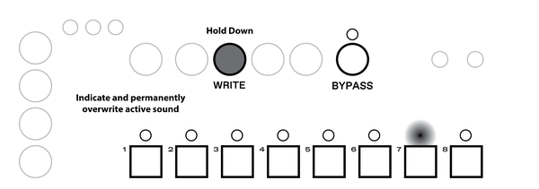
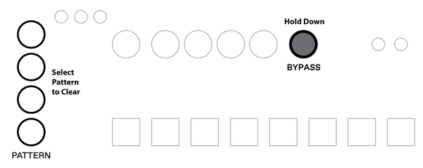

Introduction
This document is intended as a complete reference manual of Thyme’s functionality.
Look here if you are searching for explanations of specific features or if you are one of those persons who like to read through manuals before they use stuff.
If you just want to know the bare minimum to get started, check out the short manual.
What is Thyme
Thyme is a versatile sound processing unit: It takes an audio input signal, modifies it and sends it to the output. The digital sound processing performed by Thyme can be summarized as a “Sequenceable Robot-Operated Digital Tape Machine”. Here you see a greatly simplified illustration of its core functionality.
Imagine the tape moving from left to right (motor turning clockwise). The signal that is written to the tape by the write head will be read by multiple read heads after certain time periods. These signals are summed, sent to the output and also added back to the input signal, creating a feedback loop.
All signal processing parameters can be tweaked live; either manually or by modulation sources which we call "Robots". Robots are similar to LFOs but go much further. On top of that, you can switch between different configurations at the push of a button or with the integrated sequencer.
Functionality Overview
Before we dive deeper into Thyme’s signal processing, let’s take a bird's eye view on the instrument, its function blocks and how they interact.

The core of the instrument is the Digital Tape Machine at which we took a brief look in the previous section. Its operation is defined by 9 parameters which can be tweaked manually or each by their own dedicated Robot.
All settings of all parameters and all Robots combined is called a Sound. There are eight of these fully customizable Sounds, one being active at a time. You can switch between the Sounds manually or let the internal sequencer handle it for you - according to customizable patterns.
Now, we are ready to investigate the function blocks in more detail.
Digital Tape Machine
Here’s a complete illustration of Thyme’s Digital Tape Machine. The knobs symbolize parameters that can be manipulated.

| Input Gain | Before the input signal can be processed it needs to be amplified or attenuated depending on the signal source. This parameter sets the gain of the preamplifier. It ranges from complete attenuation of the input signal to a maxium gain of 20dB (factor 10). It is the only parameter that cannot be controlled by a Robot and is constant for every Sound. Set and Forget. The white LED indicates that some signal is detected at the input, the red one indicates that the gain is too high so the signal clips and is being distorted at the input. |
| Tape Speed | Define how fast the tapes moves. |
| Delay Coarse and Delay Fine | Control the position of the main read head in relation to the write head. The coarse knob ranges from zero to 2.7 seconds, the fine one just goes up to a few milliseconds. They both add up. |
| Spacing | Macro control to change the position of the three remaining read heads together. |
| Levels | The read heads controlled by Spacing can have individual contributions to the feedback and output signal. This knob controls all of them at simultaneously. In the last quarter the loop gain is greater than one, allowing self-excitation. |
| Feedback | The sum of all the read heads is scaled by this factor before it will be fed back to the input signal. On full, you get a loop gain of exactly one (provided Levels is off). |
| Filter | Next to scaling, you can also filter the feedback and output signal. In the lower half you control the cutoff frequency of a lowpass filter, in the upper half it’s a highpass. Right in the center position the filter is bypassed. |
| Wet/Dry | Mix between processed and unprocessed signal. |
| Volume | Control the overall output volume. This parameter is global but different Sounds can add different modulations by their Robots. |
All parameters have their individual knobs, allowing you to tweak them all at the same time.
Mono Input Mode
When you insert a mono cable into the audio input, it would normally be interpreted and output as a stereo signal with one channel being silent.
To avoid this, activate Mono Input Mode, which uses the single channel of the input signal for both channels.Hold down
Fnand pressBYPASSto toggle mono input mode. The current status is indicated by theBypassLED.

Knob Freezing
Before you start tweaking some knobs, you should be familiar with the special yet intuitive way the knobs react.
In different views and different Sounds one single knob is used to set different values. This is realized by a concept we call Knob Freezing. It is based on each knob being equipped with a dimmable LED that indicates the current value of the knob - from 0 to full amount.
A knob can be frozen meaning the value it holds (indicated by the LED) does not match the physical position of the knob. This happens for example when you switch to a different Sound which has this particular parameter set differently.
To modify the value, the knob needs to be unfrozen which can be achieved in two ways:
Quickly move the knob a slightly in any direction. The parameter value will transition to the current value of the physical knob position and will start tracking its movement. This method allows a quick but glitch-free modification of the controlled parameter.
Move the knob slowly to the value indicated by the LED. After they match, the knob value will be tracking the physical knob position. This method ensures a very controlled modification of the parameter.

Switches
In addition to the knobs, there are three switches that alter the behavior of the signal processing chain. You can activate them independently from each other with their dedicated buttons.

Delay Sync
The position of the main read head defines the time between writing the signal to the tape and reading it back.
This time can be chosen freely or - with the SYNC switch activated - quantized to rhythmical intervals (eight-notes, quarters,..).
The intervals are derived from the tempo of the sequencer.
See the sequencer section for how to set this tempo.
The possible multiplications / divisions of the tempo are: 1/32, 1/16, 1/8, 1/4, 1/3, 1/2, 1, 2, 3, 4, 6, 8, 12, 16, 32, 48, 56 and so forth.
Sync is also active for extra read heads - unless this is deactivated.

Delay Link
As the tape speed changes, it also takes a different amount of time for the tape to travel a fixed distance between write head and read head.
Sometimes it might be desirable to keep this time constant.
With the Link switch enabled, the position of the main read head will be automatically adjusted when the tape speed changes in order to compensate for any effect on the delay time.
In other words: Tweaking the tape speed will not affect the final delay time.

Freeze Mode
The Freeze Mode turns Thyme into a looping device. To achieve this, the flowgraph is dynamically reconfigured and some parameters slightly change their meaning:
Once you trigger the Freeze Mode (either by activating it or by activating a Sound that has freeze mode enabled), the clean input signal is written to the tape for the time equal to the main read head’s delay time.
During that period the feedback and delay knob LEDs are turned off. The input signal is also routed directly to the output.
After that the input is disconnected and will only be reconnected once you deactivate freeze mode. There is now a closed loop with the tape and the feedback path.
The overall amplification of the loop is controlled by the feedback knob.
When it is on full, there will be a steady loop; if it is lower, the signal will fade out over time.
The signal from the three extra read heads is not mixed into the loop but only added to the output.
This way you can use them to spice up your loop but also go back to the clean version at any time you wish.
In the second half of the Levels knob this behavior changes and the signal from the extra read heads start to get mixed into the loop.
Extended Parameter Settings
For some parameters there exist additional switches that allow to slightly alter the behavior of the machine. As they are less performative they are a bit more hidden.
| Parameter | Extended Setting |
|---|---|
Tape speed |
LoFi Tape (LED off; default). When lowering the tape speed, the input signal is just resampled at a different rate with no additional filtering. This will cause interesting aliasing effects. Furthermore, the upsampling process is intentionally made less accurate with low tape speeds, emphasising this character even more. HiFi Tape (LED on). Before resampling, the input signal is lowpass-filtered to reduce aliasing; in the upsampling process linear interpolation is used. This implementation is closer to the behavior of an analog tape machine. |
feedback |
Negative Feedback (LED off; default) or positive Feedback (LED on). When building a comb filter, this will result in odd or even harmonics. |
spacing |
The three extra read heads either react to the SYNC switch (LED on; default) or not (LED off). |
Change Extended Parameter Settings
To alter extended parameter settings, hold down
Fnand twist theTAPE SPEED,FEEDBACK, orSPACINGknob which toggles the corresponding setting on/off. The current state of each setting is shown by the knob LED.
Sounds
There are eight Sounds and one Bypass Sound to switch between. The regular Sounds are pre-configured to "clean setting" - meaning all parameters are in a positions that don't affect the signal and are waiting for your edits. The Bypass Sound will pass the input signal unmodified to the output; only the global Volume parameter can be tweaked.
Switch Sounds
You can switch between the Sounds by pressing one of the
1-8buttons orBypass.
The active Sound is indicated by an LED.

Robots
All parameters - except for input gain - each have their dedicated modulation source, called the Robot.
This is indicated by the  symbol next to the knob.
symbol next to the knob.
Select a Robot
All nine Robots work independently from each other and run simultaneously, but you can only control one at a time. To select the one to control, press and hold down
Robot Select.The selected Robot will always be shown with full brightness. All other parameters will display the output of their Robot.
To select a Robot for a different parameter, simply move the corresponding knob slightly. The selection change is directly indicated by full brightness of the LED as explained above.
The output of the selected Robot is permanently indicated by the dedicated Robot LED.

The Robot’s modulation curve is mainly defined by three parameters: Mode, Rate and Shape.
With Amount you can define how strong this modulation should be. Setting it to zero (fully left) will turn off modulation by this Robot.

Robot Modes
A Robot can be one out of eight Modes and controlled inside this Mode by the two parameters Rate and Shape. In every Mode these controls have a specific meaning but in general you can say that Rate refers to how fast the waveform changes and Shape changes its decoration. The Modes can be divided into two groups: oscillators and non-oscillators.
Oscillator Modes
In all these Robot Modes Rate controls the frequency of the oscillators. All pictures show oscillators for the same fixed Rate and variable Shape.
 |
|
|---|---|
 Triangle Triangle |
Regular Triangle Oscillator without any waveshaping |
| Stepped Triangle |  Triangle Oscillator resolution control: From regular triangle, via stairs up and down to rectangle Triangle Oscillator resolution control: From regular triangle, via stairs up and down to rectangle |
| XOR’ed Flopping Triangle |  The basic waveshape is a triangle oscillator turned off half of the time at regular intervals during one period. On top of that, parts of the waveform are inverted due to a XOR modulation. The basic waveshape is a triangle oscillator turned off half of the time at regular intervals during one period. On top of that, parts of the waveform are inverted due to a XOR modulation. |
 Stepped Ramp Stepped Ramp |
 Like the Stepped Triangle but with a ramp as basic waveform Like the Stepped Triangle but with a ramp as basic waveform |
 Stepped Random Stepped Random |
 Picks a random value in fixed time intervals. The transition between subsequent values can be hard (jumping) or smoothed out - however you set the Shape parameter. Picks a random value in fixed time intervals. The transition between subsequent values can be hard (jumping) or smoothed out - however you set the Shape parameter. |
 One-Shot Decay One-Shot Decay |
Linear decay from full to off. Triggered when you activate the Sound |
Non-Oscillator Modes
|
|
|---|---|
 Envelope Follower Envelope Follower |
 This robot tracks the loudness of the input signal in a specific frequency range. With the Rate parameter you can select the frequency range you want to track. This allows you to modulate any parameter with the dynamics of the input signal in the bass, low mid, high mid or high frequency region. It will quickly react on peaks and then settle fast or slowly, depending on the Shape you set. The picture illustrates the effect of different Shape settings with a fixed Rate for a given input signal. This robot tracks the loudness of the input signal in a specific frequency range. With the Rate parameter you can select the frequency range you want to track. This allows you to modulate any parameter with the dynamics of the input signal in the bass, low mid, high mid or high frequency region. It will quickly react on peaks and then settle fast or slowly, depending on the Shape you set. The picture illustrates the effect of different Shape settings with a fixed Rate for a given input signal. |
| External Control Voltage |  Use the external control voltage (inserted to CV jack) to modify a parameter. The Rate control has no effect, Shape lets you add lowpass filtering / slew limiting. Use the external control voltage (inserted to CV jack) to modify a parameter. The Rate control has no effect, Shape lets you add lowpass filtering / slew limiting. |
Change Robot Mode
You can select the Mode by holding down
Robot Selectand pressing the1-8button corresponding to the Mode symbol.The selected Mode is indicated by an LED.

Change Robot Parameters
The two parameters Rate and Shape are set by the same knob - hold down
Robot Selectto adjustShape, release it to adjustRate.
The
amountknob - like all other knobs - is always active regardless of theRobot Selectbutton.
Robot Sync
The frequency of oscillator-type Robot Modes can be quantized to the sequencer’s tempo, similar to the Delay Sync.

Set Robot Sync
Press
Robot Syncto enable/disable syncing for the selected Robot. The status is indicated by the LED. The possible multiplications / divisions of the tempo are: 1/32, 1/16, 1/8, 1/4, 1/3, 1/2, 1, 2, 3, 4, 6, 8, 12, 16, 32, 48, 56 and so forth.
Robot Polarity
A Robot can modify a parameter in three directions: It can add its output to the knob value, it can subtract from it and it can modulate around it. There are three different settings: Negative, Bipolar and Positive Polarity.

Set Robot Polarity
You can set the polarity of the selected Robot by holding down
Robot Selectand pressing one of the buttonsFreeze/Link/Sync. WhileRobot Selectis being pressed, the current polarity is indicated by an LED.
Robot Phase
When activating a Sound, all Robots are setup according to the settings stored for this particular Sound. Robots set to oscillator-type Modes also reset their outputs. Usually, they are set to zero, so - for example in triangular Mode - the modulation is off at the very first moment and rises. This starting point can also be set to three other positions.

Set Robot Phase
You can set the polarity of the selected Robot by holding down
Robot Selectand pressing one of the fourPatternbuttons. WhileRobot Selectis being pressed, the current phase setting is indicated by an LED.
Robot Stereo Polarity
Normally, both stereo channels are processed equally. When you activate stereo polarity on a Robot, it will influence the left and right channel in the opposite direction.
For oscillator-type Robot Modes this means phase-shifting the waveforms for both channels (on the left channel, the triangle oscillator is at its peak while it’s in its valley on the right channel), for Envelope and Control Voltage this means inverting the polarity (on the left left channel the robot would add up to the knob value, on the right channel it would subtract). In stereo polarity the LEDs of the knobs indicate the current parameter value for the left channel only.
Set Robot Stereo Polarity
You can activate/deactivate stereo polarity of the selected Robot by holding down
Robot Selectand pressingRobot Sync. WhileRobot Selectis being pressed, the LED will indicate the current status.
Volt-per-Octave
When Tape Speed or Delay Fine is modulated by external control voltage (by setting their Robots to CV Mode), the voltage is not interpreted linearly but as volt-per-octave.
This means that when a steady voltage of 1V is applied to the jack, the tape speed or delay length will be doubled, for 2V the factor will be four and so on.
Depending on the polarity setting the modulated parameter is multiplied or divided by the factor defined by the control voltage. The mapping is implemented in such a way that positive polarity will in most situations increase the pitch (higher tape speed, shorter delay) and negative polarity will reduce the pitch (lower tape speed, longer delay).
Sequencer
The sequencer lets you switch between the eight Sounds and the Bypass Sound automatically. The order of the Sounds being activated is defined by a Pattern. The speed of the play head moving through the pattern is defined by the active clock source.

Pattern
A Pattern is 8 steps long with each step being divided into 4 substeps, resulting in a sequence length of 32 positions. Every position contains either a reference to one of the eight Sounds or to the Bypass Sound. Once the play head reaches a position with a different Sound, it activates that Sound.

Play & Stop Sequencer
The sequencer is started and stopped by the
PLAYbutton.When it is running, a transition to the next step is indicated by a blink on the
WRITELED. At the start of the sequence - when the first step is being activated - allpatternLEDs blink together once.Playback will always start from the first step.

Change Pattern
You can select one of the four patterns with the
Patternbuttons. The active pattern is indicated by the LED. When patterns are switched while the sequencer is running, the position of the play head will not be reset.

Write and Live Mode
There are two modes of operation for the sequencer that differ in the playback and recording behavior.
In Live Mode you can temporarily overwrite the Sound and use live recording.
The Write Mode lets you precisely view the current position of the sequencer and set individual steps.
Switch Between Live and Write Mode
You can switch between the two modes by pressing
WRITE. The current mode is indicated by theWRITELED. When it’s off you are in live mode, when it’s on you are in write mode.

Live Mode
The aim of the live mode is to show the resulting Sound changes of the sequencer, perform on top of a stored sequence and potentially record this performance into the sequence.
Playback
At any moment inside live mode, the currently active Sound is indicated by the
1-8LEDs or theBypassLED.

Recording
When the sequencer is running, you temporarily overwrite Sound changes by pressing and holding the corresponding
1-8button orBypass. Once you release the button, the sequencer will continue playing the active pattern.You can press multiple
1-8buttons of the same time. The most recent one will always be active.To record to the current pattern with your performance, hold down
WRITEand keep pressing the1-8buttons. This is only possible while the sequencer is running.
Write Mode
The aim of the write mode is to edit a pattern more precisely and allow edits while the sequencer is not running.
Playback
The
1-8buttons and LEDs now indicate the eight steps of the pattern.When you start the sequencer in write mode, you will see a blinking LED travel through the pattern. The four blinks on every step indicate its substeps.

To modify the pattern you first have to select a Sound before you can write it to a specific position.
Select A Sound to Write
Press and hold down
SOUND. The1-8LEDs and theBYPASSLED will now indicate the selected Sound. Press the corresponding button to change the selection.

There are two ways to edit a pattern: on the step level or on the substep level.
Step Editing
The
1-8LEDs now indicate in which steps the selected Sound is active.When an LED is on, at least one of the substeps holds the selected Sound. By shortly pressing the corresponding button, set all substeps to Bypass.
When the LED is off, all substeps are set to a different Sound (another regular Sound or Bypass). By shortly pressing the button, you set all substeps to the selected Sound.
Please note, that pressing a
1-8button longer will let you enter substep editing mode. So a long push alone does not trigger any action.
Substep Editing
To modify a pattern on the substep level hold down the
1-8button that holds the substep you want to edit. After a short moment, thePATTERNLEDs will indicate the status of the substep.If a
patternLED is on, the corresponding substep is set to the selected Sound. Pressing the button will set the substep to Bypass.If a
patternLED is off, the corresponding substep is set to a Sound different from the selected one (can be a regular Sound or Bypass). Pressing the button will set it to the selected Sound.

Clock Source
The sequencer can run from one of the three different clock sources. Before a clock signal is used for the sequencer it passes a clock divider.
| Tap Tempo | Internally generated clock which can be set by pressing TAP |
| Analog Clock | Rising edges of signal passed to CLK input |
| MIDI | Using beat clock messages from MIDI input |
Change Clock Source
You can change the clock source by holding down
Fnand pressingTapto cycle through the three options: Tap Tempo / Analog Clock / MIDI Clock.While
Fnis being pressed the current clock source is indicated by the three LEDs aboveFreeze/Link/Syncin the order indicated below theTapbutton.
The signal of the selected clock is permanently shown on the
TAPLED.
For each clock source there are four divider options.
| Tap | Analog Clock | MIDI | |
|---|---|---|---|
| A | 2 steps per tap | 1 substep per edge | 8 substeps per quarter note |
| B | 1 step per tap | 1 substep per 2 edges | 4 substeps per quarter note |
| C | 2 substeps per tap | 1 substep per 4 edges | 2 substeps per quarter note |
| D | 1 substep per tap | 1 substep per 8 edges | 1 substep per quarter note |
When the divider option is being changed, the sequencer will remain phase-aligned with the input clock.
The dividers are independent of each other. So you can for example have option B activated for the Tap Source and Option D for MIDI.
The selected clock source and clock dividers will not be reset by power cycling.
Set Clock Divider
To change the divider option for the selected clock source, hold down
Fnand press one of thePATTERNbuttons.While holding down
Fn, the selected the divider and the divided clock signal is shown by thepatternLEDs.

Tap Tempo
When Tap is selected as a clock source, the speed of the sequencer can be set by the TAP button.
The average time between two button presses will be taken as the time for one step.
If you hit the button only every few steps, this is interpreted as resync events only.
Furthermore, Thyme can be used as MIDI clock master when running from Tap clock.
Manual Resync
With any of the clock sources selected, hitting TAP triggers a resync between the sequencer and the active clock source.
The detailed behavior is different for each clock source
Memory
Thyme contains static memory storage used to save Sounds, Patterns and general settings.
Banks
As described in the previous sections, there are four Patterns which can each contain any of the eight Sounds. Together they form a memory Bank.
There are eight of these independent Banks. Please note, that although switching Banks is usually fast it can temporarily disturb syncing of delay time and oscillator Robots. The sound processing however is guaranteed to be glitch-free.
Change Bank
To change to a different Bank, hold down
Fnfor around one second. All but one1-8LEDs will light up. This one indicates the active Bank. Press one of the1-8buttons to switch the bank.
Copy and Paste
To quickly create Sounds, you can copy and paste them to and from different Sound slots.
Also you can copy and paste between Banks.
Copy and Paste a Sound
To copy the active Sound, hold down
Fnand pressWRITE. To paste the stored copy top the active Sound, hold downFnand pressPLAY.

Clear Sound or Pattern
You can reset Sounds and Patterns to their default values. For Sounds this means the 'clean setting', for Patterns this means all steps are set to the Bypass Sound.
Clear Sound
To clear a Sound, either hold down a
1-8button and pressBYPASSor hold downBYPASSand press a1-8button. The corresponding LED will blink once shortly to indicate success.
Clearing a Sound is not possible in Write Mode because the
1-8buttons indicate Steps not Sounds.
Clear Pattern
To clear a Pattern, either hold down a
PATTERNbutton and pressBYPASSor hold downBYPASSand press one of thePATTERNbuttons. The corresponding LED will blink once shortly to indicate success.
Save
By default all changes to Sounds and Patterns are discarded when the device is turned off or Banks are changed so they must be saved explicitly.
Save Bank
To save all changes in the current Bank (all eight Sounds and all 4 Patterns), hold down
Fnand pressSOUND. The1-8LEDs will blink three times to indicate a successful operation.
Persistent Settings
A few settings are automatically stored in static memory and reloaded when starting up
- Selected Clock Source
- Selected Divider Options for all Clock Sources
- Speed of Tap Tempo (stored when starting or stopping sequencer)
- Selected Bank
- Mono Input Mode on/off
- MIDI Channel
Connectivity

| Power input | 5.5mm/2.1mm barrel jack, 7-12V, positive center, 400mA |
| Audio Input | 6.3mm stereo or mono, 10k input impedance, -∞ to +20dB gain |
| Audio Output | 2x 6.3mm mono |
| Headphone Output /w level adjust | 3.5mm stereo |
| Footswitch Input | 3.5mm mono, attach passive switch that connects sleeve and tip |
| CLK Input | 3.5mm mono, 100k input impedance, trigger threshold at ~0.5V, rising edge, maximum 5V |
| Control Voltage Input | 3.5mm stereo Tip: 100k input impedance, range 0-5V Ring: 5V voltage source for use with an expression pedal (passive voltage divider) |
| MIDI Input and Output | Standard DIN connectors |
| Dimensions | Approximately 23cm x 12cm x 5cm |
Appendix
Randomize
You can randomly set all parameters of the current Sound in three ways
Fn + Robot Select + Freeze |
Randomly pick all tape machine parameters. Do not modify Robots |
Fn + Robot Select + Link |
Randomly pick all Robot settings. Do not modify base tape machine parameters |
Fn + Robot Select + Sync |
Randomize both tape machine parameters and all Robots - but only within a limited range around current values |
MIDI
Practically everything you set on the device itself can be achieved with MIDI commands.
Routing
All received MIDI messages are forwarded to the output (MIDI through).
The only messages generated by the device itself are realtime messages when Tap tempo is used as clock source and the settings dump function (CC125).
Channel Voice Messages
Thyme listens to MIDI Voice Messages on a single channel.
You can read and set the channel during device startup. The MIDI channel is persistently stored in the device’s memory.
Read MIDI Channel
When powering on the device, the knob LEDs will fade on and the current MIDI channel will be displayed by the
1-8LEDs.When all LEDs are off but a single one is on, its position indicates a channel number from 1 to 8.
When all are on but a single one off, its position indicates a channel number from 9 to 16.
Set MIDI Channel
To change the channel keep one of these button combinations pressed while powering up the device:
Channel 1-8:
1-8buttons
Channel 9-16:Fnand1-8buttonsThe new channel will be indicated right away, as described above.
Control Change
With Control Change Messages you can control all parameters of the selected Sound.
The data byte of any midi control message is interpreted in one of these ways.
| Scale | Maps the received value to a different range. In most cases, this will be the range you can set with the parameter knob. For example Volume from off to full. |
| Select | Maps the range of the received value to a few discrete values. For example select one out of eight Robot Modes with the values from 0 to 127. |
| Switch | Special case of Select with high values mean on and low ones off. For example turn on/off Delay Sync if value is greater/smaller than 64 |
| Trigger | Ignores the data byte. Only the fact that a message of this number has been received triggers a certain action |
Pitchbend
Modify Tape Speed in range ⅓ to 3 relative to current value.
Notes
| Note-On/Off 0 | Select/Deselect Bypass Sound |
| Note-On/Off 1-8 | Select/Deselect Sounds 1-8 |
| Note-On 9-12 | Select Pattern 1-4 |
| Note-On/Off 9-127 | Set fine delay time to frequency defined by note number |
In each Note-Domain (selecting Sound and setting fine delay time) only one note can be active at a time. If multiple notes are on (for example by holding down multiple keys on a keyboard), the most recent one will be active. A history of active notes is tracked and once you release the latest note it falls back to the previous one.
Automations in Karplus-Strong-Configuration
Karplus-Strong is a synthesis technique based on physical modelling of a plucked string: A short delay and a filter are used to create a resonant loop (simulating the string) that can be excited with short bursts of noise (simulating the plucking).
Using the fine delay, filter and feedback knob, Thyme can be configured for Karplus-Strong-Synthesis allowing separate control over pitch, timbre and decay time.
To facilitate the use as a synthesizer two parameter automations are implemented:
- When receiving MIDI Note-On messages 9-127 the fine delay knob is set to create a resonant frequency equal to the frequency defined by the MIDI note.
- The decay time in Karplus-Strong configuration is depending both on the delay time and the amount of feedback. To keep the delay time constant for different MIDI notes, the feedback is reduced for low notes. This feature can be enabled/disabled by CC89
Realtime Messages
In general, all realtime messages are forwarded like any other message. Depending on the active clock source they are also generated so that Thyme becomes a MIDI bus master.
No matter which clock source is active, MIDI clock messages are always tracked in the background. So when switching to MIDI clock source, the sequencer will be set to the position where it would have been if it was running on MIDI clock all the time.
| Active Clock Source | Behavior |
|---|---|
| Tap | Start, Stop and Clock messages are generated according to the Tap Tempo and the play status of the sequencer. This only makes sense if there is no other master device up the bus. So as soon as any realtime message is received, Thyme senses a conflict and stops generating realtime messages. You can reset this and start sending messages again by first selecting a different clock source and then re-selecting Tap. Received realtime messages are not processed. |
| Analog Clock | Start and Stop messages are ignored. |
| MIDI | Start and Stop messages are used to control the sequencer. |
Bootloader
The device contains multiple microcontrollers whose firmwares might be updated in the future. Flashing firmware images can be done via MIDI, so the only hardware required is a computer, a MIDI adapter and a MIDI cable.
The firmware images are packed into multiple SysEx messages, which are unpacked by the device bootloader and written to the internal flash memory.
To upload a new firmware, you first need to boot the device into Bootloader mode.
Enter Bootloader Mode
To boot into Bootloader mode, hold down
Tapwhile powering up the device. You will see an animation on the1-8LEDs indicating that you are now in bootloader mode and the device is ready to receive SysEx messages.
As the bootloader needs some time to process the SysEx messages, they may not be sent too fast by the computer. There are two different methods to ensure the correct timing.
MIDI file
Placing SysEx messages at certain positions in a MIDI file allows to define their timing. All you have to do is send that MIDI file through the port Thyme is connected to.
Unfortunately there are hardly any applications that do this fairly simple job so we wrote one ourselves. It can be downloaded for Linux, MacOS and Windows here.
The usage is very straightforward: Open the downloaded MIDI file containing the firmware update, select the MIDI port Thyme is connect to and start the flashing.
Pure SysEx and Manual Timing
Another way to go is using the pure sysex messages without timing information and specifying the delay between messages manually. This method is generally slower and more complicated so we recommend this only if you have experience with this workflow.
On OSX you can use SysExLibrarian, on Windows go with MIDIOX.
For every SysEx file you send the single parameter you have to specify is the pause between messages. The correct value depends on the specific SysEx file and will be published together with it on our website.
General Information
Flashing a firmware can take up to two minutes. Do not interrupt data or power connection during flashing. But don't be afraid, you cannot destroy your device this way. The bootloader will remain accessible and retry is always possible.
When a new firmware is being written by the bootloader, the device will indicate this by some LEDs. The exact pattern depends on which chips are flashed in which order. Please refer to the information that will be provided with the firmware file.
Hardware Tests
To test devices in our production the firmware contains self-tests. These tests are also present in the production firmware so you can run them yourself if you think your unit might be faulty.
Enter Test Mode
To run tests you have to boot your device into a dedicated test mode by holding down all four
patternbuttons while powering up the device. The fourpatternLEDs indicate that you have entered test mode.There are six different hardware tests which can be run in a row (to perform a general check) or individually (to track down an error).
Run tests
To run a single test, hold down the
1-8button corresponding to the desired test (Button 2 to run only test number 2) and pressPLAY. To run all the tests 1 to 6 after another, just pressPLAYalone.In case the selected single test(s) complete without an error, you will see a light travelling through the
1-8LEDs and bouncing off the edges.A failure is indicated by
1-8LED corresponding to the failed test being on and all knob LEDs flashing. Some tests also have individual failure indications that tell you more details about what went wrong. They are displayed before the general indication.When a test failed, it can be restarted by pressing
PLAY.
| ID | Name | Description | Manual Check | Special Failure Indication |
|---|---|---|---|---|
| 1 | Knobs | Set all knobs together at a set of positions (off, center, full). Once all reach the target position the test proceeds to the next position. The knob LEDs indicate when a knob has reached its target position. | Check if the knobs reach the middle position only when they are set halfway to assure they have the correct curve | None |
| 2 | Knob LEDs | Knob LEDs fade in one after another. | Smooth Fading | None |
| 3 | Buttons | Press button closest to the LED that lights up. Pressing the wrong button is an error. | None | LED closest to button that trigged unexpectedly is lit up. |
| 4 | EEPROM | All bytes of EEPROM are written to, read back and compared with expected value. Original data is preserved. Shows progress bar. | None | None |
| 5 | External | Connect external testing utility to test CV, analog clock and footswitch. Set in this order: CV to center - 5 Clock edges - CV to off - 5 Footswitch presses - CV to full | Unit should not react on its own | None |
| 6 | Bootloader | Tries to place lower board into bootloader mode. | None | None |
| 7 | MIDI | Connect MIDI cable between input and output. Devices sends random data and checks if it can receive it. | None | None |
Copyright: Bastl Instruments - CC BY-SA 4.0